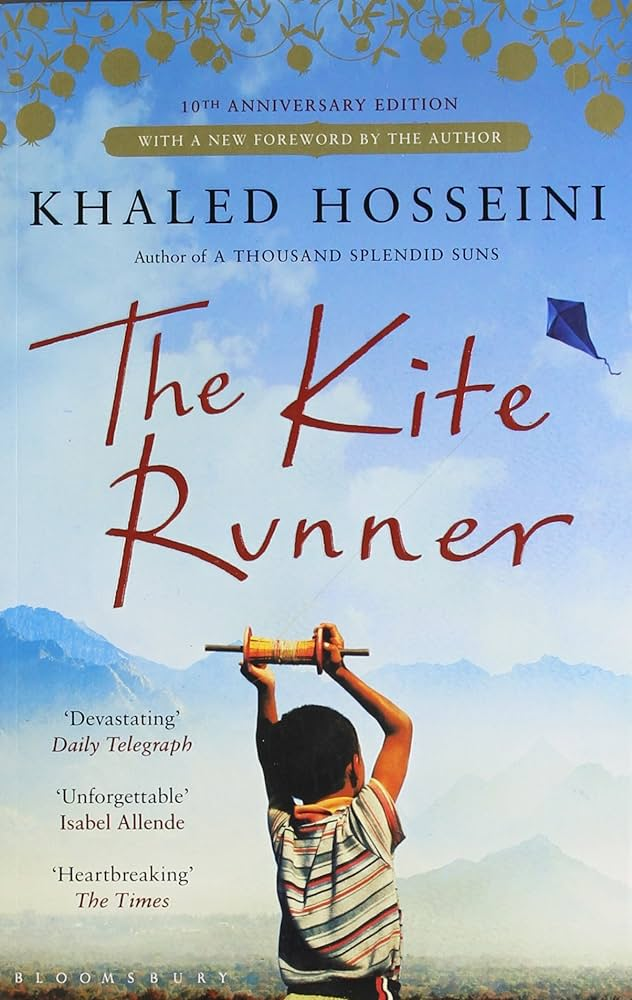

|
|
|
My name is Kalsoom Fatima. I am majoring in Landscape Architecture at
the University of Rhode Island class of 2027.
I signed up for CSC 106 because I'm interested in minoring in Data Science and wanted to take a basic programming class first.
I graduated Cranston High School West in 2023 where I took a website designing class and
a Computer Animation class. We
used Weebly and Wix
for the Website Design Class and a software called Maya 8.5 for the Animation class. I have also just
recently joined the
Memorial Union IT Service Desk as a Student Information Technologist.
I have been living in Rhode Island for the past 5 years, but I am originally from Pakistan. I am multilingual as I am fluent in
English, Urdu, Punjabi, and Hindi. I also took 4 years of Spanish in high school but I can't say that I'm fluent in Spanish. I like
reading, cooking and watching movies in my free time. My favorite book of all time is The Kite Runner and favorite film series
is The Chronicles of Narnia. I love cooking Pakistani/Indian cuisine and my favorite dishes are Biryani
and Panipuri.
Back to home
|  |